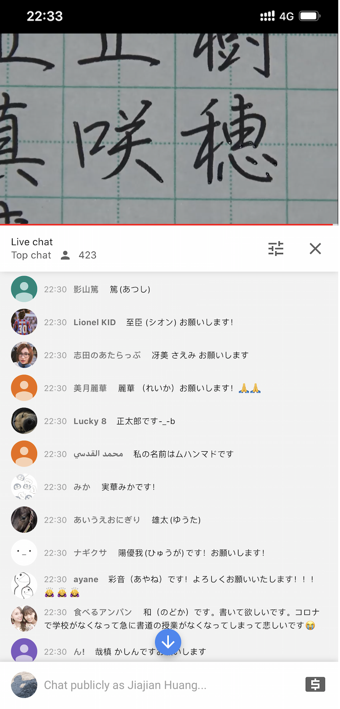
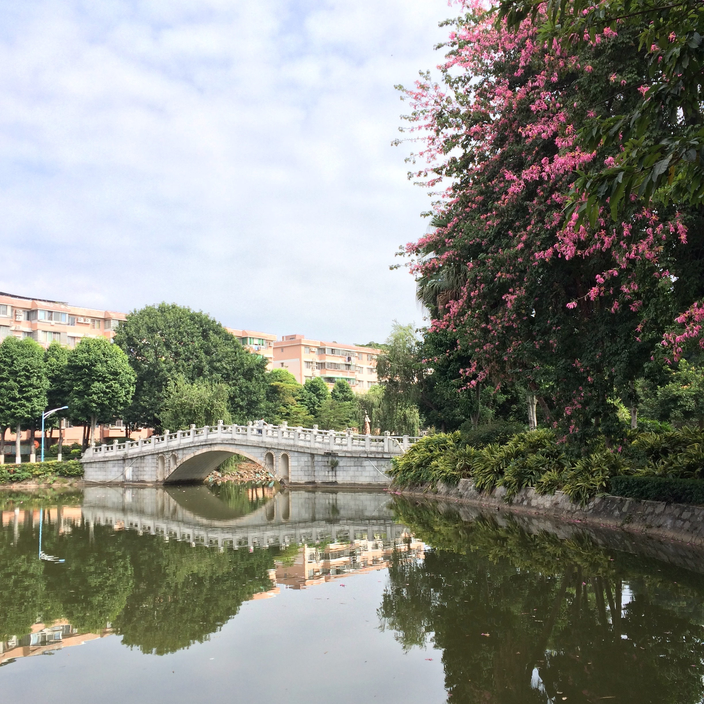
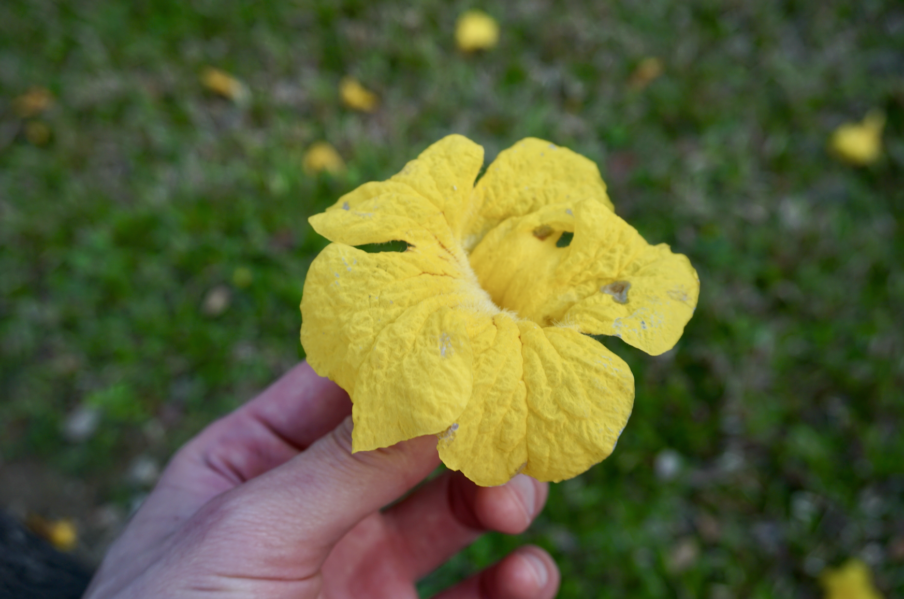
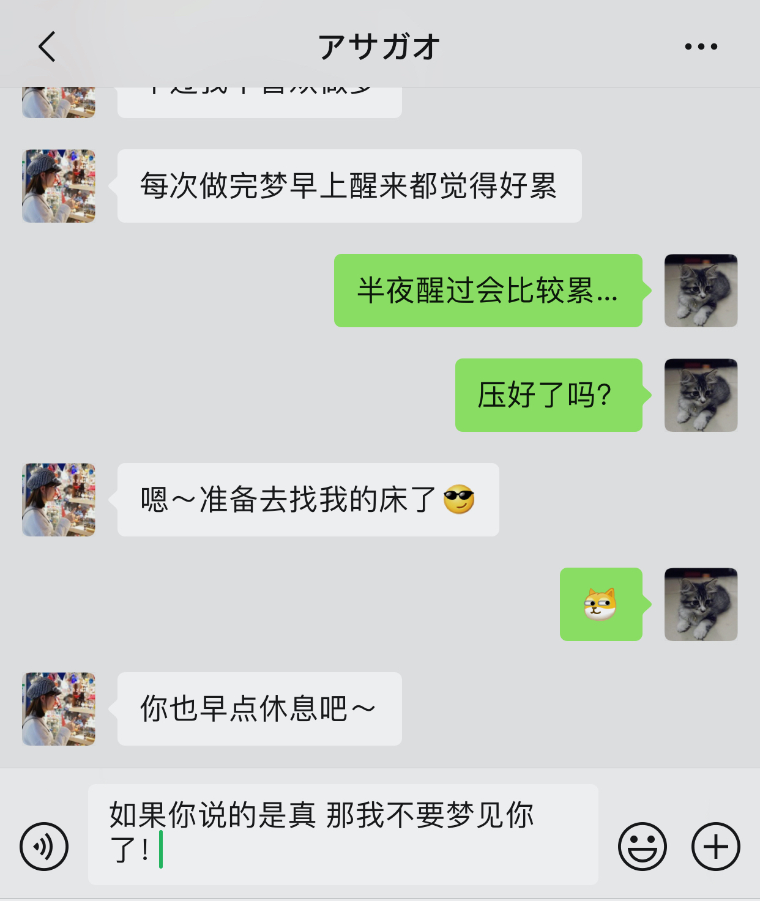
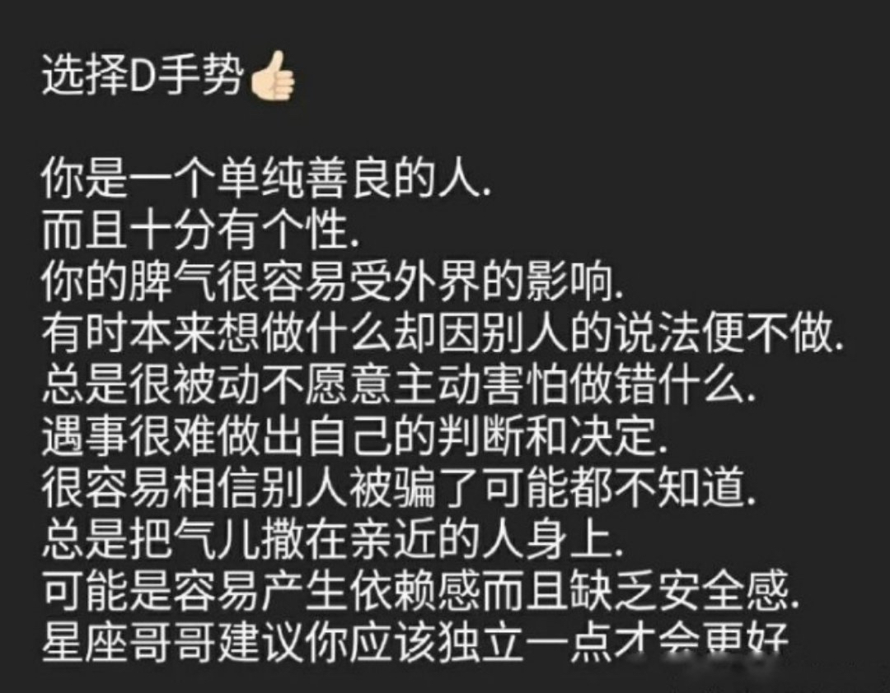

朝顔
如果你想说，那我就在听．
Sunshine
所以啊，我其实没你想象中那么阳光…焦虑其实算是我的常态[Concerned][Concerned]只是程度不一，调节的时间不一…
哈哈，微信上我说过的就不再说了～没说的就在这里说．我想你看到．
你可能没有察觉，我没有想象过你很久了．我已经习惯了你的语言，你的文字以及你的情感．不知道你会不会有这样的感觉，反正我是会的．只要你不是刻意去欺骗我，从你的文字里就已经读得出你是怎样的一个人了．最初可能存在想象，甚至幻想，包括你的容貌，声线，性格，脾气，观点……时间长了就会发现根本不需要想象，你就是我眼前的这样一个你，这就是我喜欢的样子，伴随着时间它变得日渐清晰，直到我已经知道眼前的丽华是一个怎样的人．
😂当然，你也不忘打击一下我……如果结合前面所说的就会知道，有一天打败我的不是你父母的原则问题，也不是你的打击，而是我自己．
🙁10分钟都不给我……
我曾经在非常安静的晚上想过，其实我知道自己配不上你．只有接受残破的自己，才是真正直面眼前的问题．我就这样的平凡，带着自己的固执走下去．不敢把喜欢挂嘴上，但眼里心里梦里的，又该如何诉说．要跑多快，才能追得上你．
我只是个普通人，我也会难过和失望．
我预见了所有悲伤，但我依然愿意前往．
— 《降临》
今天我有点自闭．
前晚聊起高中的生活，今天又去翻了一下相册．大学以前的照片实在太少．我只是不想拍照．大概只有出现在别人的相框里的时候，才会没有所谓．不知道这种抗拒来自哪里，也不知道它为何而来，也不知道后来它为什么就消失了．可能我以前觉得拍照跟写日记是一回事，也可能不是这个原因，也可能是单纯的觉得自己丑，也可能是别的原因……我也不知道．但是，我好多次都问过自己，到底是什么原因才会不想通过这种方式来记下青春的往事，毫无负担的日子（相对现在）．想要得到一个明确的答案，但始终没有．我也不知道乐于拍照以后什么时候开始愿意露出牙齿，以前真的是拍什么照片都喜欢把嘴唇紧闭，正儿八经似的．人就这是样慢慢地变掉的．
往事：
- 一直到现在，只有每个数学老师的名字我依旧记得．其它科的，有些忘记了．
- 高三的时候数学老师是我一对一指导老师，对我充满期待的他在出成绩之后并没有失望．但我却不敢面对他．直到我上了大一服从分配之后又读了数学专业，我又回高中在窗外看他上课，在短暂的课间休息时间里的一番话，让我放下了曾经背负着的重担．
- 那数学老师跟我们说，不会就选A吧．
- 上大学之后第一次回家在小区楼下碰到高三时候的班主任，我们都叫她海棠姐．她说高考考化学睡着了，醒来发现试卷背后还有一面没做，最后还是去了北师大．经常拿这事来鄙视我们……
- 高三有一天托同学买了9个包当早餐．
- 高一时候是4号，高二的时候是3号，高三的时候是2号，大一的时候是1号．
- 高二开始，经常会在一家小食店买肠粉，然后还会给班里的同学打包．上了大学之后，很多次一下车就会先去那里吃个早餐，再回家．直到现在．那里的阿姨总会记得我和我的同学．那么多年了，我在那里还是只点这几样：猪肝肠和鱼片粥，视乎情况可能会多点一个瘦肉炒面．
- 高一某了语文课上有个女生因为我读了一首诗之后就跟我表白了．
- 高一的语文老师在高考之前，跟我谈了一次话，那时我就预感会辜负她．
- 高一的时候成绩是班里最好的，但总是偷偷打游戏到深夜．上语文课睡着总是被班主任批评……那也是我这辈子迟到频率最高的一段日子．
- 把吃晚饭的钱拿来买游戏点卡以后，每天放学都去同学家蹭饭吃．
- 高一的时候喜欢听一个电台节目，叫《一些事，一些情》．
- 高一的时候重新遇到去了别的初中的小学时候喜欢的女孩子，发现没有那么喜欢了．呵，小孩子的爱情．
- 考试的时候，如果监考老师是自己的老师，站在我旁边看的时候，通常会翻到会做的地方做，生怕她发现我不会……
- 以前我不喜欢写圆珠笔，因为有笔墨．后来不知道咋的发现换了书写方式就不会有了，于是就喜欢上了圆珠笔．每次都去同一家店一盒一盒地买．
- 那么多年基本上都坐最后一排，实在喜欢后面没有人独占一块地的地主体验．
- 中考区里前60名不用交高中学费，而我考了66名．语文老师跟我说有点可惜．
- 第66名的成绩足以去佛山一中，但因为不想住宿结果没有去．3年后高考考砸了想去复读，出成绩的那个下午去佛山一中溜了一圈，又是免学费．第二天还是决定不去了．
- 初三的语文老师要求我们用粤语背诵古文，说这样不容易写错别字．
- 初三的时候喜欢拿笔戳前面女生的背……
- 初二物理竞赛培训的时候，喜欢在课上偷偷地看同学的漫画．
- 初二的物理老师是副校长，后来贪污被抓了．有次去医院探病，碰到他．
- 有个特殊癖好，放学的时候喜欢跟骑车先骑到同学家，再骑回自己家……好像天总是聊不完似的．
- 以前我以为语文老师才能当班主任．
- 以前不喜欢做笔记，所以会拜托同桌做……然后别人都觉得我和她有暧昧，但她爸是校长．
- 小时候体质不怎样的，军训什么的，总共晕倒过三次．
- 初一的时候演过一次话剧，是《项链》，那是第一次跳交谊舞．
- 初一的时候6点多就回到学校学习，结果自行车被翻过围墙进学校的小偷给偷走了．
- 现在回想，那时的刚毕业的班主任是我师姐．
- 六年级数学考试，同桌丢了一张纸条给我，然后我抬头一看看到数学老师正看着我．
- 小学五年级在玩具店偷了一台电子宠物机，被抓到了，哭着跟店主道了很久的歉，才放了我走．之后就再也不敢经过那间店．
- 放学的时候总喜欢在校门口卖蛋糕仔的阿姨里买一份再走．
- 儿童节的时候表演过人生第一支舞《香蕉船》．
- ……

你在改论文，而我在看小视频～
当你在意一个人的时候，到处都有她的影子．😄这都能看到"你"！ 不过我是有多无聊才在看别人写字……

原来你还是改到了12点．比你早睡了．お疲れさまでした〜
你不会相信今晚你出现、我看到信息的时候就是从床上跳起来的……😄我也不知道为啥这么兴奋，就是好开森．
看到你高中时候的照片，第一感觉就是：太甜了！第二感觉就是：好青涩！
这个世界变化的东西太多，不变的东西也有很多．例如：你的笑容．我认真地看了一下高中这张和之前朋友圈的那几张，变化实在太少了．当然，实际上变化还是有的．比如：感觉你长高了，😅头发也变多了……还多了一份成熟．高中那张其实更灿烂一些，也可感受到毫无顾虑，当然还有喜悦．😍还有更好看了！感觉自己像花痴……不过，喜欢就想说出来．
一定，一定，请一定要继续这样笑下去！
😅告诉你一件……的事情……原来我们认识两个月了．今天不小心发现的，这个真没注意．有个同事过来问我什么时候有时间处理事情，我就看了一下日历，发现今天是24号．没记错的话两个月前的24号应该是除夕吧，我们相遇的日子．（为了确认，我又重新滚到上面看了一下第一条，确实是24号……）
今天实在太热太热了．是我认识你之后最热的一天了．早上其实还是能感觉到有点潮有点闷的，到了中午就是热热热．早上你跟我打招呼的时候看到太阳表情，最先想到的是，你是小太阳！有你我就不怕潮潮湿湿了．
大学生活的遗憾，说起的时候其实我也深思了一下．是的，有的，就是跟你说的那些．但后来就想起，我只"遗憾"了一阵子．每走一步都是当下自己的选择，而它们之中的大部分，我想应该都不需要严肃到要问一下自己："如果这样，你会后悔吗？"那么对大部分选择来讲，不值得谈什么遗憾不遗憾．而剩下那些，如果已经能直面这个抉择并且经过自己的思考而得到了答案，那些不管最终的"结果"或者"变化"是如何，都不会是遗憾．作出一个从心的选择，比得到一个好的结果，更配得上你的勇气．（虽然我现在是这么觉得，但是回想起来，我大学的时候对于这件事情的想法应该不是这样．同年纪的女生，应该比较成熟吧．）青春的宝贵不在于完美而没有遗憾，在于它只有一次活出你风格的，不论你走学霸路线，还是活力路线，还是其它路线……这个烙印将伴随着你走向下一阶段，或许有时你想起它，内心会隐痛一下，或许不会，但它就在那里，或许还在潜移默化地影响着你．
因为你重看了一下毕业前写的那张纸条（第一感觉：字真丑），看着当时写的文字，真青涩，甚至有点幼稚，那时候随随便便都可以感动，任何小事都可以让自己满足．不过，那么幼稚的自己，现在看起来也不是那么讨厌．
不小心就伴你走过一个春天．春去秋来，只想四季有你．想等你睡着，这样才安心．
《日记》
我不是个写日记的人，正如我不是个写笔记的人……
我翻了一下去年敲过的字，一共写了日记三篇，还有一篇不是日记．
其实我是不喜欢敲键盘，正如我写字慢又丑就不喜欢做笔记一样．应该是开始工作以后，一整天都要敲着键盘我才变得那么不喜欢敲键盘的……所以我特别无法理解还有些人要买个上千块的机械键盘来啪啪啪地写东西的人．之前有问题问要送什么礼物给程序员男友，然后回答都说机械键盘．😂我就是那种不喜欢机械键盘也不喜欢键盘的程序员了……
另外就是恃着自己记忆力好，我觉得要记得的自然会记得，不记得的终究会忘记．所记得的，是那个瞬间的心情，而限于表达能力又无法精准描述，还不如就那样放在心里好了．当然日记对于唤醒事情是有帮助的，正如我有一个同学，他喜欢天天刷朋友圈，说怕哪天老了做过什么都不知道……😂
这里是我穷尽毕生语文水平写下来的有你存在的心情，我也想它成为连接我们的桥梁．
所以我管"这里"，叫《情书》，而不是《日记》．
以前我睡觉也会关机．
后来发现，关机相当于在短暂时间内全世界都找不到我，或者说在短暂时候内从这个世界抽离出来，这是有可能错过一些事情的（肯定不是工作！）．虽然我也想毫无骚扰地一觉睡到天亮，但是为了稍微降低错过一些重要事情的可能性（比如说可能我半夜醒了，戳一个躺在附近的屏幕，看时间和有没有消息，那我就可以在天亮以前就知道），现在我还是只开了免打扰模式睡觉．
我想，这个世界上总有某些时候，总有某些人，因为某些事情在半夜需要我，这大概就是一个充分的理由吧．
今天我把《牛仔裤的夏天》和《牛仔裤的夏天2》都看完了．😂我一个大男生，只能部分共鸣女生的友情……不过我最喜欢里面患血癌的小女孩说的话：
Being happy isn't having everything in your life be perfect. Maybe it's about stringing together all the little things.
— Bailey
现在的我，发现越来越容易被生活里出现的小事所触动，也想跟你分享．它们的出现有些可能是必然，有些可能是偶然，有些可能要我伸手去抓住，但是它们都与这样的一个我遇上，这就是"缘"和"份"吧．千千万万块这样的碎片所组合出来的，或许才是生活本来的样子．
这是我第一次先写完这里再跟你说话啊哈．
梦见你发了一条语音信息给我，然后我就听了．但我起来之后忘记了说的是什么……
有时我在想，如果我就年轻个两三年，现在我们恋爱很久了吧．（不要脸）
你就像一只一直在奔跑的小羊羔．
你一忙起来，我们又只剩下半小时了，算上表情一共75句，其中我发了42句．
我在想我是什么时候怎样早起的，才有了这样的日子．仔细一想，应该是自从我开始跑步之后．
读研的时候，生活实在太单调了．有天有个大学同学过来找我谈心，那时他正在纠结要不要离职．在操场一番畅谈，突然大家都想说要不要跑一下步就回去．那应该是是我时隔N年才开始跑的步了．高中大学的时候，校运会的3千米、5千米长跑总是冷门项目，基本上都没什么人去报名．那时候觉得能跑的人特别厉害，毕竟，体育课考试男生只考1千米女生8百米．这么一想，我都怀疑在那以前我有没有跑过超过1千米．
那天我们应该只跑了6、7圈吧，现在算起来只有3千米左右．跑完还学着别人在操场边压了一下腿．这就是那么平淡的开始跑步的第一天．跑完第二天腿有点酸．倒也没有出现什么特别励志的故事让我开始下一次跑步．就想着，反正晚上无聊，就打发一下时间吧．于是就有了一天又一天，从3千米到5千米，从5千米到10千米，从10千米到22千米的这么一段日子．每一趟旅程，都给了我好长一段时间思考，以及去"偷窥"别人的生活，就不再哆嗦重复了．不过期间看了村上的《当我谈跑步时我在谈些什么》，应该说对我影响比较大，最主要的是，好多以我有限的表达能力里无法表达的事情，仿佛从别人的口里找到了共鸣．就是那种"对对对，我也那么觉得！"的感觉，就是自己却无法表达出来．这可能是长期沉浸在数学世界里不小心忽视了情感表达的重要性的后果．
到现在为止好像还跟早起没什么关系．其实对我来说，早起就是我去跑步之后一个自然的结果．晚上跑完步，带着汗水，戴着耳机，然后散步回宿舍，这是我当时找到的我认为最适合当时自己的结束一天的方式．以前有人说晚睡不过是对当天有所留恋以及缺少开始新一天的勇气（当然我觉得有些人只不过是放不下手机……），我不清楚自己是不是那样，只是当有能力亲手给一天划上想要的句号的时候，早睡就是这个能放下当天一切事情，仿佛完成一次完整的磁盘碎片整理之后的结果．于是，早起也几乎成为了必须．
自不自律不好说，但跑步让我看到了早起晨曦．
其实我也喜欢阳光明媚．当然更想你是我的小太阳，而不止是小太阳．
剪了个头回来发现，真丑……对去陌生的地方剪发有恐惧，每次都要跟Tony解释说要怎样怎样剪，其实我就想剪个碎发而已．主要原因当然是好洗！易干！可是，每次都说剪碎一点，不要剪平不要剪圆，结果还是剪圆了……😕不过，就算去老阿姨那里剪，每次剪完都是颜值的低峰期，可能本身就比较丑……
慢慢地就接受了这一个事实，我不过是普通人里的普通一员．丑就丑点吧，头发长出来就好点．丑也可以好好学习天天向上，丑也可以喜欢你一样的女孩子．于是，当颜值变得像年龄一样，成为一个数字而已的时候，纠结的事情就不复存在．所以剪完戴上眼镜看镜子的时候，内心感受就是：唔……嗯．
😂我这样的人是不是太无趣了，这样的生活是不是波澜太少．或许有时候人是需要用力地表现出各种情绪，但自从认识你之后，我只想跟你大笑．特别难过有一次，偶有失落，但还在等待着我们能一起大笑的那一天．
今年似乎错过了绿叶榕落满一地的那几天．
晚上回来的时候，看到隔壁小区的几棵，地上已经没有一地金黄，但是树枝上已经萌发出新芽．从下面看上去，一整片，好有生气．可惜的是天色已暗，看得不太清楚，哪天白天来的时候不知道还会不会是这一片翠绿色．
以前在学校的时候，每年从春天开始，看着学校里的异木棉盛开；到木棉花开始掉落一地；到三月饭堂附近的细叶榕一片一片地开始落下，到一夜落光，而后萌发新芽；到西门路上的黄铃木染出一路鲜黄以及草地上的粉红色不知名小花开满一地；到教学楼周边的广州樱含苞待放，但又经常不开；到宿舍窗外的大叶紫薇开始盛放，到湖里荷花开始露出尖尖角……春夏秋冬，变得习以为常．

我大概还是喜欢那里吧，即使别人眼里也是如此简单的景象．我想带你看看，看这春夏秋冬．
春夏秋冬，能不能都有你．
当我女朋友吧．
好久没试过头那么痛了……感觉就是缺氧．
发现最近经常本地写完忘了上传．
其实我每次给你说"那"的时候，都不知道你知道不知道是"这"．
😅怪自己当初怕死，怕大家尴尬……不过我还是希望你知道的！我想让你在这看到我的内心世界，虽然文字表达出来有时略有偏差……（其实是我的表达能力一般……）有时又略显得文艺……有时甚至有点肉麻……
まぁ……就这样吧．我怎样表达或许不重要吧，重要的是你看到的感受到的吧．你看到是怎样就怎样，这样对你才是最好的．不想令你喜欢我，想有天你喜欢上我．是的，达到"那种"程度的喜欢．是的话，那也是你的决定．这样的话，就是两份坚定．❤️
这是我（们）的第51天．
😊
10天 50天 100天 500天 1000天 5000天 10000天 50000天…50000天到不了！一辈子就没有了！！！
— 不恐怖吗！
每次这天我都只发一个表情……现在回来看，这句无聊的话好像有点意思！
突然发现一件了不起的事……
这么想，我是这世界是除了你父母之外，最"喜欢"你的人了，一下子就感觉自己厉害了很多，自豪感油然而生……虽然我不是你的啥，的啥，的啥，但我依然珍视着你的存在．
昨晚你说不要太在意时间，这个倒是让我有点意外，不过我还是挺高兴的，虽然我知道是在什么前提之下．
我以前不吃茄子的了．觉得它的口感有点恶心，然后味道有点微妙．大学的时候有一次，忘了什么原因好沮丧好失落，去美食坊点了一盘鱼香茄子，心里想着的是惩罚自己．（我也不知道为什么我会有这种自残的想法）当阿姨拿过来的时候我跟往常一样觉得它很油腻，至少看起来是这样．就这样带着丝丝嫌弃，吃了起来．也不知道吃到第几口，突然觉得这种和咸鱼混杂在一起还带着砂锅上停留过的味道有点香，不，真香！那应该是我第一次完整吃完茄子．那天以后，在我最讨厌的食物排行榜里，就被我删去了茄子这一项，而且，我发现我不再嫌弃它的口感跟气味，除了鱼香茄子，只要是个茄子都：真香！这是我与食物之间的一次比较难忘一次经历．
与食物尚且有奇遇，何况人呢？或者有天真的可以试试酸菜扣肉．和你．
今日はどうだったの？
— これは最高の挨拶だね．
今天看到这个，实在太搞笑了．不过我已经不记得我妈做的茄子难不难吃……因为自从知道我不喜欢吃，就再没有做过了……
我是你朋友圈的常客．
从我认识你之后，就没怎么发过朋友圈了．
我点进去之后，会翻到最下面，然后从最后一条开始往上面的看．
那里只有半年的时光．从1月开始的时候，可以看到的是7月的内容，而现在最旧一条已经是9月的了．这是我所能够触及的，最初的你了，尽管那段日子并没有我的参与．包括你的认真，你的努力，你的勇敢与你的笑容．
于是这样，每次我点进去，就像感受着时光一点点流逝，直到它可能变得一条也没有．なんか切なくなったね．
今夜は月が綺麗ですね．
— 夏目漱石
我不喜欢你客客气气的样子．
有可能我走了90步，我们还是相距10步，虽然我不想它发生，但或许它真的发生，我也不想我们做刻意保持距离的朋友一样．我是有时有点小心翼翼，但我不想小心翼翼，而且我也可以不小心翼翼．我觉得10步的距离，也不至于需要小心翼翼．于我，你是独一无二；于你，能否也稍微能让我们靠近一点？
啊啊啊啊～好想你，丽华．好想跟你说话．现在是下午16点05分19秒，在发呆．
虽然我又想你了，但我觉得我不应该经常大声跟你说：我想你了！
我应该把自己变得更好一些吧，这样才有可能配得上你．这样才有可能成为那个能让你愿意去冲撞"原则"的人吧．
看到你专注的样子，想起以前的我，我也有过这样一段日子呢．现在的我当然也没有自甘堕落，只是在所有生活的事情里，每样东西的比重在不断地发生着变化．对于此刻的我来说，最想就是追逐爱情与工作．每个人都在自己的时间线上奔跑，有人慢，有人快，有人终点迟迟未见，有人早已在歇息．这个年纪还在追逐爱情或许会被笑吧，但是遇到喜欢的人，我想追想上她，然后与她一起奔跑．
之前我看到的一篇文章，也想你看看．
New York is three hours ahead of California, But that doesn't make California slow. Someone graduated at the age of 22, But waited five years before securing a good job. Some became a CEO at 25, And died at 50. While another became a CEO at 50, And lived to 90 years. Someone is still single, While someone else got married. Obama retired at 55, & Trump started at 70. Everyone in this world works based on their time zone. People around you might seem to be ahead of you, & some might seem to be behind you. But everyone is running their own race, in their own time. Do not envy them & do not mock them. They are in their time zone, and you are in yours. Life is about waiting for the right moment to act. So, relax. You're not late. You're not early. You are very much on time.
女生节快乐．
如果没有疫情，如果没有那一次家庭会谈，现在我应该拖着你漫步在华农的校道上，看着盛放的黄铃木和飘落的紫荆花，感受着春天的气息吧．
可是世上没有那么多如果．我想了一秒，我们已经认识了43天了．这一段日子，多得有你．以后的日子，我还想有你……在2020年暖冬的尾巴上，走向春日的这段日子，我永远也不会忘记．现在的我不会去翻回去看这一页上面的东西，因为记下来的那一瞬间已经在我心里激起一次又一次涟漪，我不会忘记了．如果我有下一次再看回去，我想是我跟你一起看．
虽然世上没有那么多如果，但世上还有很多相信和可以．疫情来了，有无数的人前赴后继，病毒给人们的生活带来阴霾，人与人之前甚至变得更不信任．但依然有人为了自己为了家人为了朋友为了社会去守护着这一份信任，哪怕明知可能要付出生命的代价．因为他们相信，阴霾遮天蔽日，但它终将散去．
我也相信，因为不想「気づいたら片想い」．与喜欢的人牵手去看春天盛开的黄铃木，这样的日子值得努力和相信，值得去和……争取一下．

你可能不会觉得你跟我说一句加油影响有多大吧，毕竟对你来说只是作为朋友的一句普通鼓励．
我大三的时候有一段时间，不知道怎么的就突然就喜欢上巧克力了．😂那时候还只是个穷学生，把生活费都拿来买巧克力了，每次一买就是好几百块．大大小小各种品牌，各种口味，都吃了一圈．虽然吃了很多，我也只能区分出口感的好坏，但不知道怎样的巧克力才是最顶级的巧克力．听说巧克力里比较多的成分都是神经系统兴奋剂，很容易就让人着迷，所有吃巧克力有一种幸福感．开始我也在想，我是不是在吸毒了……时间久了我逐渐明白，主动和被动获得的快感是不一样的．我喜欢它在舌头上慢慢融化的感觉，丝滑伴随着浓香醇厚，最后停留在舌头上，还有一点点发麻．😂那是吃多了……まぁ……这感觉是吃糖或者吃其它食物都所没有的．
都说吃巧克力有幸福感，只是这幸福感因人而异罢了．今天买了一德芙，虽然不小心融化了，但还是重温了一下多年前的这种感觉．
天在下雨，我在想你．
早上起来的时候首先想到这八个字．不知道怎样想到的，就是觉得有点顺口……
很早就被雨吵醒了，比我的"闹钟"还要早．就这样裹着被子躺在那里，身体温度刚刚好，除了脸有一点点凉．就这样透过蚊帐看着天花板，心想，你应该还没起床吧哈．
中午吃饭的时候也还在下．
今晚回来很早就躺下了，在床上看着手机，犹豫要不要找你．最后还是没找．我很烦人吧……不知道为啥，又想起了那八个字．无聊打开Google搜了一搜，居然有首叫这个名字的歌！！！还挺新的……虽然是个不知名歌手（好吧，只是我不知道……）．
有时候很多人和事，就这样滴答滴答，魂牵梦萦．
今天这个有点搞笑……我说石门小学的时候，你说我猜对了一半，而这两个字的一半……😅确实是一半．
每次撩你，你都总爱发表情hah．不过你说下次不发表情的时候，我突然反而有点方……按目前来看，会不会是不发表情不回话……我经常会想撩你🙄，但是，最近有点小心翼翼吧．不是在你面前不能做自己，而是想考虑你的感受吧．我喜欢你，也就我喜欢你．
如果梦里与现实是相反的，那我再也不要梦到你了．

今天早上起来，我又把你的昵称改成了「アサガオ」……😒可能是强迫症，平假名看着总是有点怪怪的．而片假名作为地名或者人名就顺眼多了……

让我有想法的是"总是很被动不愿意主动害怕做错什么"．想了一下，大概有两种情况比较主动的．一是遇到喜欢的人，二是做我决定做一件事之后．但是，这句话换一种说法就是"遇到喜欢的人，或者在决定做一件事之前，都不怎么主动"．
一就不怎么说了哈哈，这么久以来，你也应该知道了．多难才遇到喜欢的人，不主动的话就分分钟错过半辈子．
至于二，在我下心决定去做一件事的时候，确实有时会比较忘我，甚至想一个人一直沉浸在那个世界里，直到完成．但是，在下决心之前，有时我总会想很多，去想这件事的最好最坏效果，去想这件事影响到的人和其它事，去想什么方案才是最优解决方案之类．我不敢说自己是有多善良的人，但是，确实会担心对别人会有什么影响．这个其实又算思虑过多，不是算"不主动"，而是我的"主动"，受到了它的影响．不是常言道，成大事者都不拘小节，所以我觉得我应该不会做出什么"举大计"的事情（当然不是说我毫无志向……）．或许我会追求生活富足，家庭美满，衣食无忧，也或许我会追求自律而自由，目前在我看来，"举大计"般的事情应该不是达到无论哪种目标的充要条件．不过，学着变得更果敢一点，应该不是坏事．
说到程序猿的印象．😂为什么你的印象会是西装皮鞋……不过，我感觉我不是个合格的程序猿．拖鞋、格子衬衫、大裤衩……我一样都没有．我最多的衣服，似乎是运动裤和T恤……😂T恤好像都是黑的白的和藏青的，同款都好几件，运动裤好像也是同款的几条．😂鞋子，每次换的时候都是同一牌子同一款色的不同型号……在这方面，可能我是个枯燥的男生……😂当然也有可能是因为我懒，因为我觉得运动裤和T恤比较容易洗……
不小心又废话一大堆，还是控制一下字数吧……